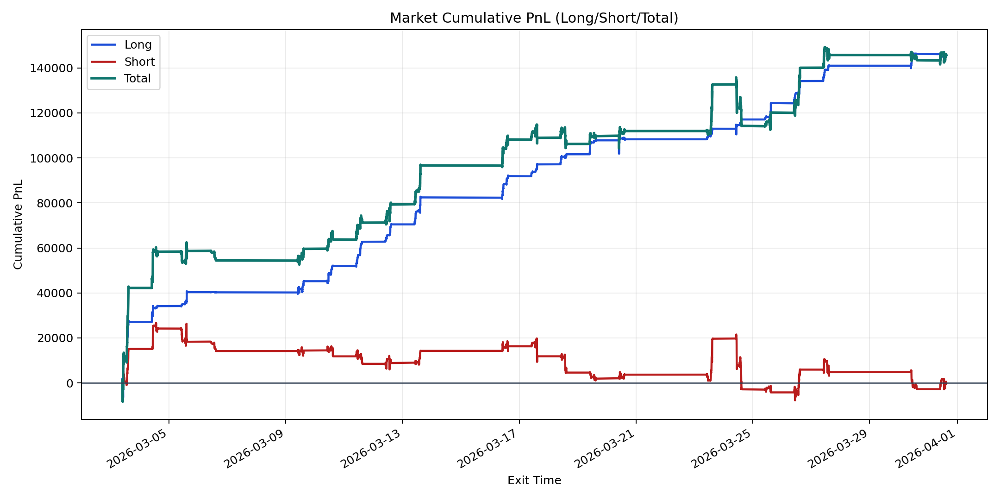
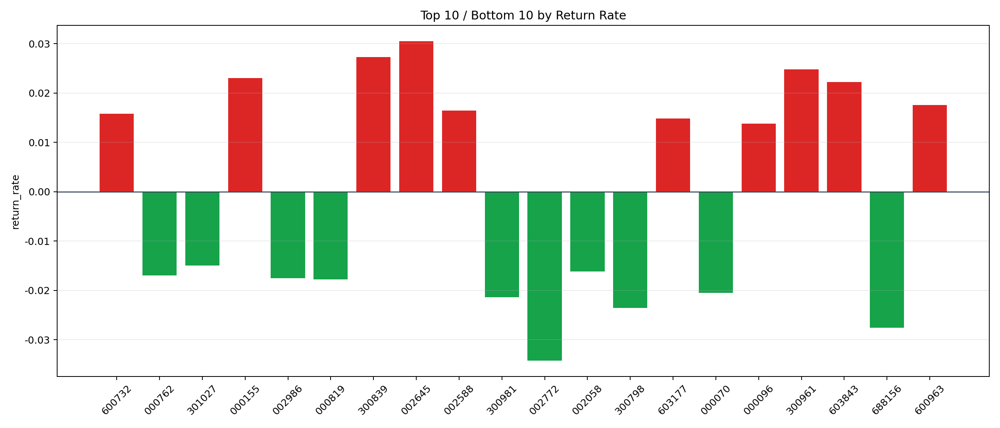

| repo_root | /home/haoranyou/data/output/alpha0.4_1w_5s_3ticks |
|---|---|
| period_months | 1 |
| period_label | 2026-03-03_to_2026-03-31 |
| start_time | 2026-03-03 09:50:12 |
| end_time | 2026-03-31 14:59:23 |
| n_trades | 24442 |
| n_symbols | 1181 |
| total_pnl | 145700.79214999982 |
| long_total_pnl | 145634.74665000002 |
| short_total_pnl | 66.04549999980645 |
| total_entry_notional | 229381655.0 |
| long_entry_notional | 61986594.0 |
| short_entry_notional | 167395061.0 |
| total_return_rate | 0.0006351893840420666 |
| long_return_rate | 0.002349455539531661 |
| short_return_rate | 3.945486778717232e-07 |
| top_symbols_by_return | ["002645", "300839", "300961", "000155", "603843", "600963", "002588", "600732", "603177", "000096"] |
| bottom_symbols_by_return | ["002772", "688156", "300798", "300981", "000070", "000819", "002986", "000762", "002058", "301027"] |

